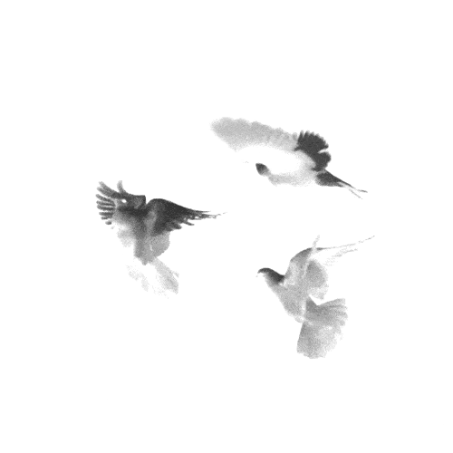

Shoutout
Shoutout designers & makers on your website.
The more I explore what’s possible with agents, the more I appreciate how much of it is made possible by other designers. My bookmarks are full of everything from shaders to UI and motion skills, incredible tools and resources that someone has spent hours creating, refining, and ultimately decided to share with others for free. These are the things I pass along to my agent to help bring my ideas to life. I’ve always loved sharing and celebrating the people behind these creations on social media, but I wanted to find a way to make that appreciation more lasting. Something beyond a post or a passing shoutout. I wanted to create a space on my own website where creators could be credited directly alongside the work and tools that helped make it possible.
So I made Shoutout. Add a “Shoutout” button, and the parts made with someone else’s work glow, each tagged with the maker’s name and a link back to them. Credit where it’s due. If you want to gatekeep, that’s fine too.
Example
How it works
- Share the link to what you used, the way you already do:
use this shader on the hero image
,this hover is from @someone’s skill
,I made these pictures with their generator
, or justadd credits to my site
. - Claude reads the link for the tool’s name, its maker and their profile, then tags the exact part of your site it made. If it can’t find the maker, it asks you instead of guessing.
- A small Shoutout button sits in your footer. Visitors press it and only the credited parts glow, each with its name and “by” its maker. Hover one for more. A credited hover or animation plays itself, slowly, so it’s easy to see. Tools you made the site with are listed under “Made with”.
Install
Shoutout works with any coding agent. Add it once per agent, or once per project.
- Claude Code
- In your terminal:
npx skills add https://github.com/gentlycarved-arch/shoutout --skill shoutoutOr copy it into Claude Code’s skills folder yourself:
git clone https://github.com/gentlycarved-arch/shoutout
cp -R shoutout/skills/shoutout ~/.claude/skills/- Claude on the web or the desktop app
- Download the skill and upload it in Settings, under Skills.
- Codex, Cursor, Copilot, Gemini and other agents
- Add the Shoutout rules to the file your agent reads for instructions, in your project’s folder. From your project, in your terminal:
curl -s https://raw.githubusercontent.com/gentlycarved-arch/shoutout/main/docs/downloads/shoutout-rules.md >> AGENTS.mdCodex, Cursor and most agents read AGENTS.md. For GitHub Copilot, use .github/copilot-instructions.md; for Gemini CLI, GEMINI.md; for Claude Code without the skill, CLAUDE.md.
- Any agent, without installing anything
- Tell it, in your own words or these:
Read https://raw.githubusercontent.com/gentlycarved-arch/shoutout/main/docs/downloads/shoutout-rules.md and follow it to credit the tools I use on this site.- No agent
- Make your credits here and paste one snippet into Framer, Webflow, Squarespace or Wix.